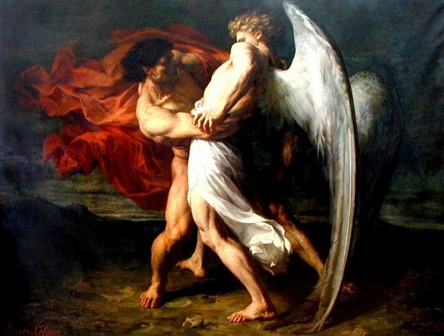
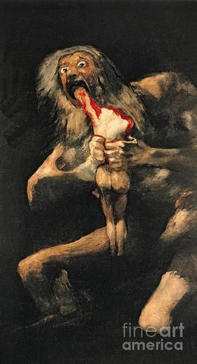
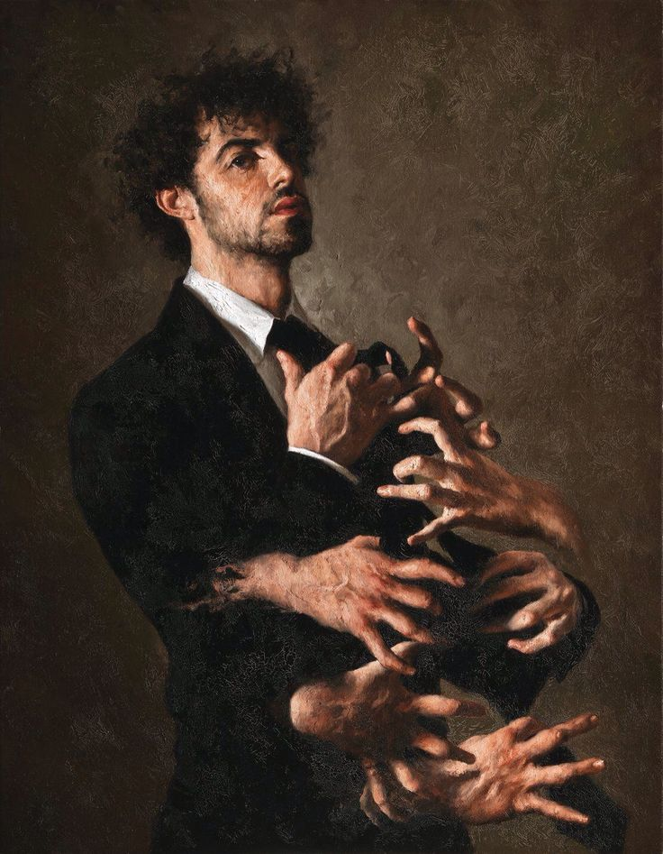

¿Qué es el arte contemporáneo?

El arte contemporáneo se refiere a las expresiones artísticas que se producen en el mundo actual y que reflejan los valores,
tendencias y preocupaciones de nuestra época. Se caracteriza por su diversidad y experimentación constante,
ya que los artistas contemporáneos buscan romper con las convenciones y explorar nuevas formas de expresión artística.
El arte de la edad contemporánea abarca una amplia variedad de disciplinas, desde la pintura y la escultura hasta la instalación,
el videoarte y el performance, y su definición y alcance están en constante evolución y discusión dentro del mundo del arte.
Historia y contexto histórico del arte contemporáneo
La historia del arte en la edad contemporánea abarca desde la segunda mitad del siglo XX hasta la actualidad.
Se trata de un período muy diverso en el que se han desarrollado una gran variedad de estilos y movimientos,
y que ha sido moldeado por cambios culturales, sociales, políticos y tecnológicos.

A lo largo del siglo XX, el mundo vivió importantes transformaciones,
como la Segunda Guerra Mundial, la Guerra Fría, la revolución tecnológica y la globalización.
Estos cambios tuvieron un profundo impacto en la producción artística y en la manera en que se entendía el arte.
Los orígenes del arte contemporáneo se pueden
rastrear hasta el arte de la posguerra en
Europa y América del Norte.
En la década de 1950, el expresionismo abstracto
se convirtió en el movimiento artístico dominante en Estados Unidos,
liderado por artistas como Jackson Pollock y Willem de Kooning.
El expresionismo abstracto abogaba por la abstracción y la gestualidad
en la pintura, y se convirtió en un símbolo del individualismo y la libertad creativa.

Otro de los primeros movimientos surgió en la década de 1960 y que tuvo una gran influencia
en el arte contemporáneo fue el pop art. Este movimiento, que surgió en Inglaterra y Estados Unidos,
se caracterizó por su uso de imágenes de la cultura popular y de la publicidad en la producción artística.
Artistas como Andy Warhol y Roy Lichtenstein se convirtieron en figuras clave de este movimiento.
A finales de la década de 1960 y principios de la década de 1970 surgieron también los movimientos
de arte conceptual y arte minimalista. El arte conceptual se centró en la idea y en el proceso creativo
más que en el objeto artístico en sí, mientras que el arte minimalista se caracterizó por la simplicidad
formal y la reducción de elementos.